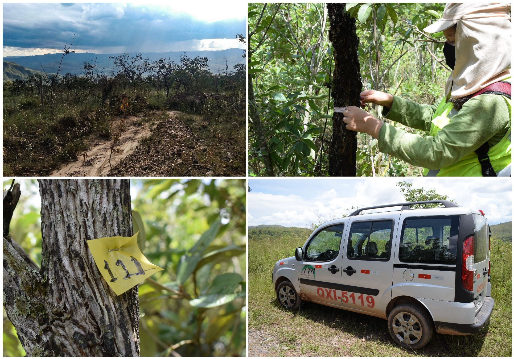
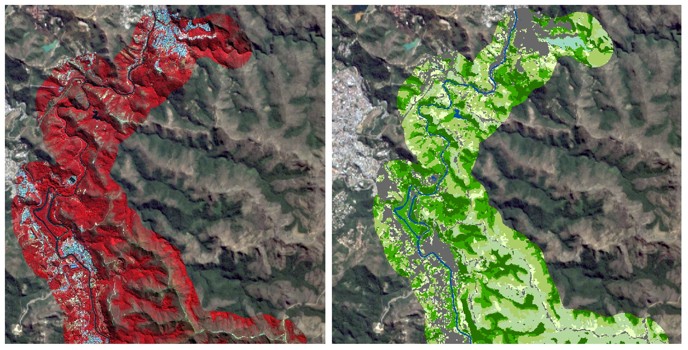
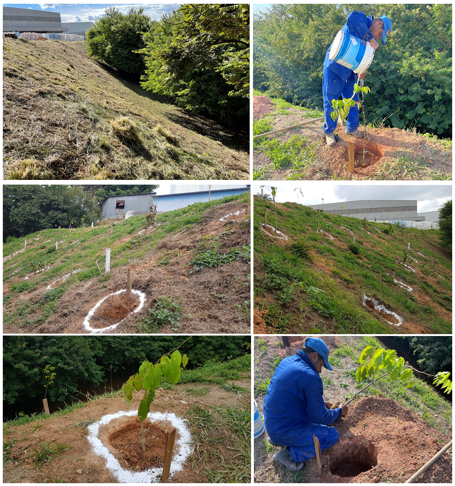
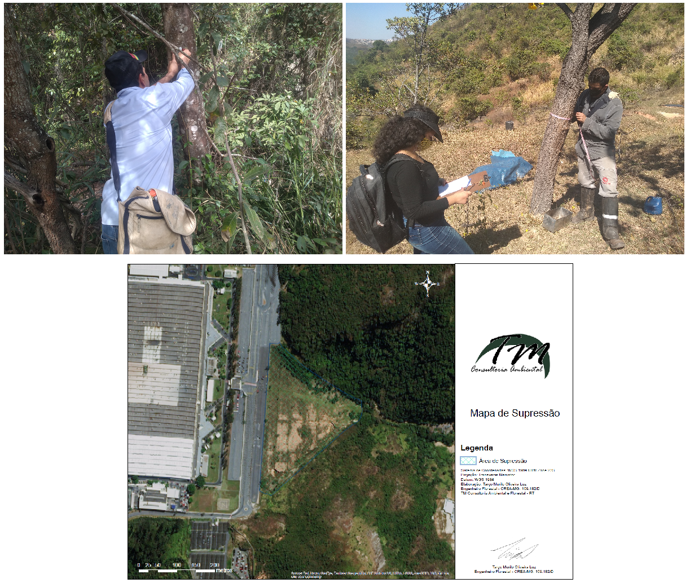
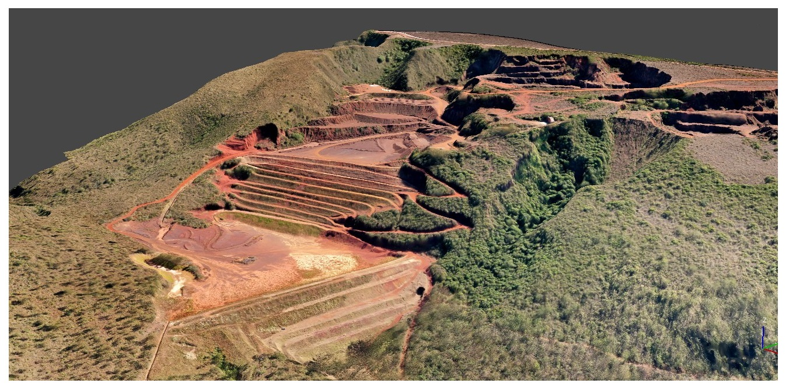
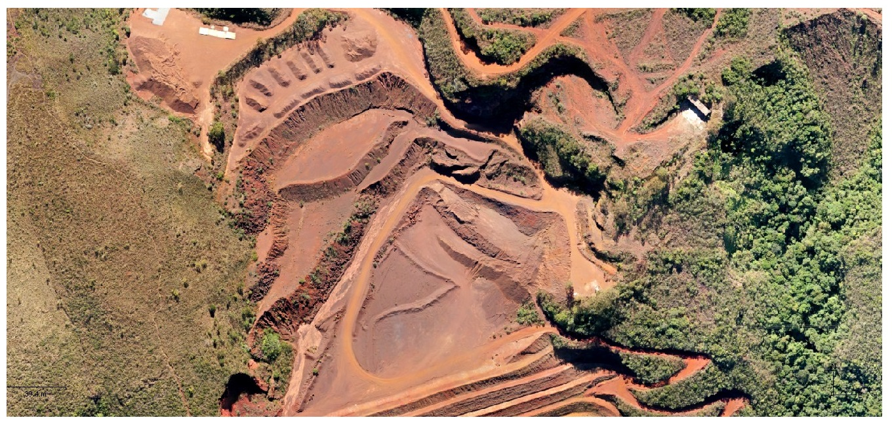
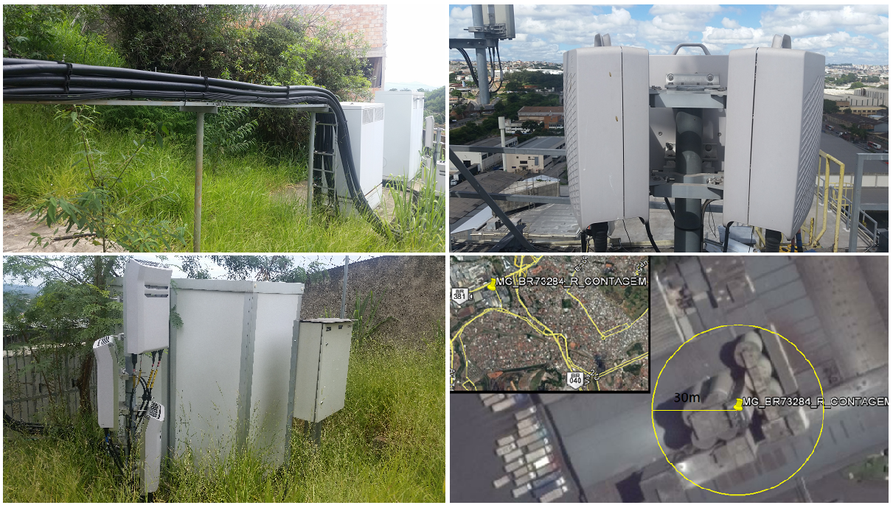

Caracterização de Vegetação
Caracterização de vegetação para Estudo de Prévio Ambiental
• Serviços executados
- Descrição Física e Biótica do Local
- Classificação da vegetação em mais de 13.000 ha
- Levantamento de áreas protegidas, hidrografia e APP
- Inventário Florestal de Mata Nativa
- Processamento de Inventário Florestal
- Levantamentos secundários de flora
Levantamento de Dados Primários de Flora

Classificação da vegetação por imagens do satélite CBERS-04A auxiliado por NDVI

Execução de PRAD/PTRF
Execução, acompanhamento e monitoramento de plantio de mudas nativas devido à compensação ambiental exigida para o licenciamento.
• Serviços executados
- Projeto descritivo das atividades
- Prescrição dos tratamentos culturais
- Elaboração de relatório de plantio
- Monitoramento de condução
Execução de plantio para compensação ambiental

Inventário Florestal para Supressão de Vegetação
Levantamento e processamento de dados de inventário florestal para supressão de vegetação.
• Serviços executados
- Caracterização física e biótica do local
- Coleta de dados de censo florestal (Inventário 100%)
- Análises florestais e mapeamento do local de supressão
- Elaboração de PUP com descrição física e biótica da área
Coleta de dados de inventário e elaboração de mapa de supressão

Levantamentos topográficos e aéreos
Elaboração de ortofotografias digitais e modelos digitais de terreno
• Serviços executados
- Sobrevoo com drone e coleta de fotografias aéreas
- Elaboração de modelo digital de superficie (modelo 3D do local)
- Finalização da fogografia ortorretificada
Elaboração do modelo tridimensional do terreno

Fotografias ortorretificadas e georreferenciadas

Curvas de Nível e mensuração de volumes
Diagnóstico Ambiental de estações rádio-base
Levantamento das características ambientais de estações rádio-base de telefonia celular
• Serviços executados
- Caracterização ambiental da situação do site
- Elaboração de plantas as-built
- Elaboração e revisão de relatórios
Caracterização ambiental de estações rádio-base
